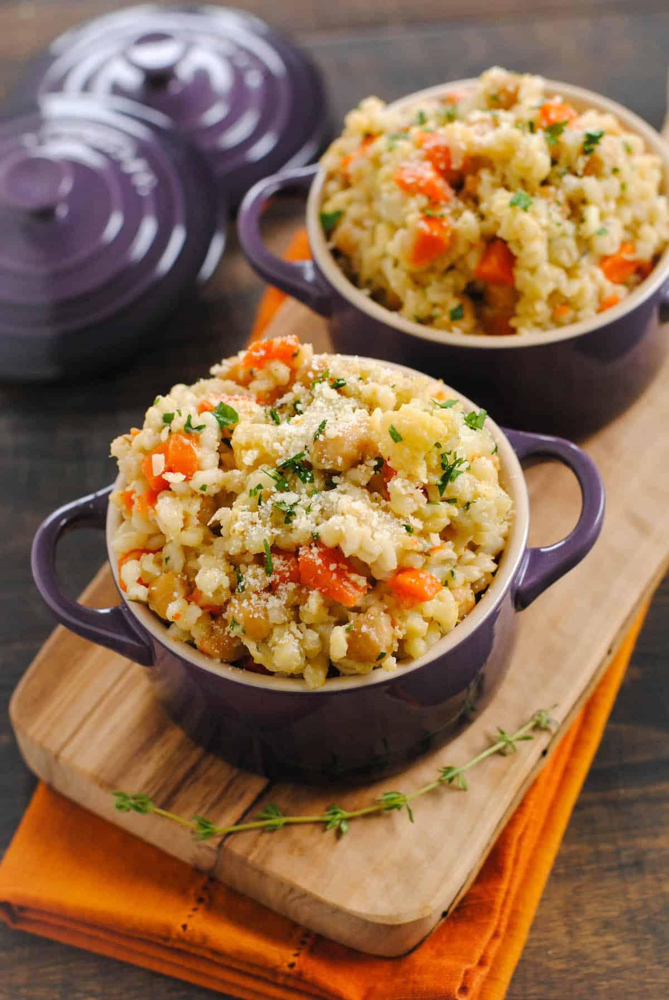

Crockpot Chickpea & Barley Risotto

A cozy, veggie-packed risotto that practically cooks itself in the slow cooker and is an easy weeknight winner.
Prep Time: 20 minutes
Cook Time: 2 hours 30 minutes
Total Time: 2 hours 50 minutes
Yield: 4 servings
Ingredients
- 1 Tbsp olive oil
- 3 carrots (peeled and chopped)
- 1/2 head cauliflower (cut into small florets)
- 4 sprigs fresh thyme
- 1.25 Cups pearl barley
- 1 can garbanzo beans (rinsed and drained)
- 2.5 Cups low-sodium broth
- 1.25 Cups water
- 1/2 tsp. kosher salt
- 1/4 tsp. ground black pepper
- 1/3 Cup grated parmesan cheese
- 3 Tbsp chopped fresh parsley
Instructions
- Heat oil in large saucepan over medium-high heat. Add carrots, garlic, cauliflower and onion. Cook until vegetables being to soften, about 5 minutes, stirring occasionally.
- Stir in thyme and barley; cook 2 minutes, stirring frequently.
- Transfer mixture to slow cooker bowl. Stir in garbanzo beans, broth, water, salt and pepper. Cook on high 2 to 2-1/2 hours or until barley is tender and most liquid is absorbed.
- Remove and discard thyme sprigs; stir in lemon juice. Serve in warm bowls garnished with cheese and parsley.
Notes
To make plant-friendly, use vegetable stock instead of chicken and omit the parmesan cheese or use a parmesan cheese made with plant-based microbes.
Home